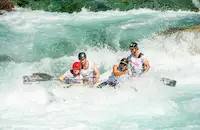

Historically, Dorfor Kome Island has been a hidden gem for adventure seekers. With its breathtaking landscapes and the powerful currents of the Volta Lake, the area has become a premier destination for white-water rafting enthusiasts.
The region's natural beauty and thrilling rapids attracted explorers and adrenaline lovers, leading to the development of guided rafting experiences.